MAXimal
добавлено: 11 Jun 2008 11:06
редактировано: 7 Nov 2011 15:45
Содержание [скрыть]
Нахождение наидлиннейшей возрастающей подпоследовательности
Условие задачи следующее. Дан массив из  чисел:
чисел: ![a[0 \ldots n-1]](../tex2png/cache/2f7c3ec9c849a4dcbfc3195989056b93.png) . Требуется найти в этой последовательности строго возрастающую подпоследовательность наибольшей длины.
. Требуется найти в этой последовательности строго возрастающую подпоследовательность наибольшей длины.
Формально это выглядит следующим образом: требуется найти такую последовательность индексов , что:
В данной статье рассматриваются различные алгоритмы решения данной задачи, а также некоторые задачи, которые можно свести к данной задаче.
Решение за  : метод динамического программирования
: метод динамического программирования
Динамическое программирование — это весьма общая методика, позволяющая решать огромный класс задач. Здесь мы рассмотрим эту методику применительно к нашей конкретной задаче.
Научимся сначала искать длину наидлиннейшей возрастающей подпоследовательности, а восстановлением самой подпоследовательности займёмся чуть позже.
Динамическое программирование для поиска длины ответа
Для этого давайте научимся считать массив ![d[0 \ldots n-1]](../tex2png/cache/38d695526225bef162865943225ab63c.png) , где 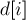 — это длина наидлиннейшей возрастающей подпоследовательности, оканчивающейся именно в элементе с индексом
, где 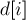 — это длина наидлиннейшей возрастающей подпоследовательности, оканчивающейся именно в элементе с индексом  . Массив этот (он и есть — сама динамика) будем считать постепенно: сначала , затем и т.д. В конце, когда этот массив будет подсчитан нами, ответ на задачу будет равен максимуму в массиве 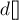.
. Массив этот (он и есть — сама динамика) будем считать постепенно: сначала , затем и т.д. В конце, когда этот массив будет подсчитан нами, ответ на задачу будет равен максимуму в массиве 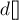.
Итак, пусть текущий индекс — , т.е. мы хотим посчитать значение , а все предыдущие значения уже подсчитаны. Тогда заметим, что у нас есть два варианта:
- либо , т.е. искомая подпоследовательность состоит только из числа
![a[i]](../tex2png/cache/3530c8c1281c8ee618b020a2333a22ca.png) .
. - либо 1">. Тогда перед числом в искомой подпоследовательности стоит какое-то другое число. Давайте переберём это число: это может быть любой элемент , но такой, что . Пусть мы рассматриваем какой-то текущий индекс
 . Поскольку динамика для него уже подсчитана, получается, что это число вместе с числом даёт ответ 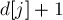. Таким образом, можно считать по такой формуле:
. Поскольку динамика для него уже подсчитана, получается, что это число вместе с числом даёт ответ 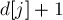. Таким образом, можно считать по такой формуле:
Объединяя эти два варианта в один, получаем окончательный алгоритм для вычисления :
Этот алгоритм — и есть сама динамика.
Реализация
Приведём реализацию описанного выше алгоритма, которая находит и выводит длину наидлиннейшей возрастающей подпоследовательности:
int d[MAXN]; // константа MAXN равна наибольшему возможному значению n for (int i=0; i<n; ++i) { d[i] = 1; for (int j=0; j<i; ++j) if (a[j] < a[i]) d[i] = max (d[i], 1 + d[j]); } int ans = d[0]; for (int i=0; i<n; ++i) ans = max (ans, d[i]); cout << ans << endl;
Восстановление ответа
Пока мы лишь научились искать длину ответа, но саму наидлиннейшую подпоследовательность мы вывести не можем, т.к. не сохраняем никакой дополнительной информации о том, где достигаются максимумы.
Чтобы суметь восстановить ответ, помимо динамики надо также хранить вспомогательный массив ![p[0 \ldots n-1]](../tex2png/cache/9ff50b5f8fed0fbedd5d2edbbbd08679.png) — то, в каком месте достигся максимум для каждого значения . Иными словами, индекс
— то, в каком месте достигся максимум для каждого значения . Иными словами, индекс ![p[i]](../tex2png/cache/6fa33a48f7fff7f52d08a07ab012145a.png) будет обозначать тот самый индекс , при котором получилось наибольшее значение . (Этот массив
будет обозначать тот самый индекс , при котором получилось наибольшее значение . (Этот массив ![p[]](../tex2png/cache/f41743bb1304c4dfaee1474862f9de80.png) в динамическом программировании часто называют "массивом предков".)
в динамическом программировании часто называют "массивом предков".)
Тогда, чтобы вывести ответ, надо просто идти от элемента с максимальным значением по его предкам до тех пор, пока мы не выведем всю подпоследовательность, т.е. пока не дойдём до элемента со значением .
Реализация восстановления ответа
Итак, у нас изменится и код самой динамики, и добавится код, производящий вывод наидлиннейшей подпоследовательности (выводятся индексы элементов подпоследовательности, в 0-индексации).
Для удобства мы изначально положили индексы : для элементов, у которых динамика получилась равной единице, это значение предка так и останется минус единицей, что чуть-чуть удобнее при восстановлении ответа.
int d[MAXN], p[MAXN]; // константа MAXN равна наибольшему возможному значению n for (int i=0; i<n; ++i) { d[i] = 1; p[i] = -1; for (int j=0; j<i; ++j) if (a[j] < a[i]) if (1 + d[j] > d[i]) { d[i] = 1 + d[j]; p[i] = j; } } int ans = d[0], pos = 0; for (int i=0; i<n; ++i) if (d[i] > ans) { ans = d[i]; pos = i; } cout << ans << endl; vector<int> path; while (pos != -1) { path.push_back (pos); pos = p[pos]; } reverse (path.begin(), path.end()); for (int i=0; i<(int)path.size(); ++i) cout << path[i] << ' ';
Альтернативный способ восстановления ответа
Впрочем, как почти всегда в случае динамического программирования, для восстановления ответа можно не хранить дополнительный массив предков , а просто заново пересчитывая текущий элемент динамики и ища, на каком же индексе был достигнут максимум.
Этот способ при реализации приводит к чуть более длинному коду, однако взамен получаем экономию памяти и абсолютное совпадение логики программы в процессе подсчёта динамики и в процессе восстановления.
Решение за 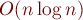: динамическое программирование с двоичным поиском
Чтобы получить более быстрое решение задачи, построим другой вариант динамического программирования за  , а затем поймём, как можно этот вариант ускорить до
, а затем поймём, как можно этот вариант ускорить до  .
.
Динамика теперь будет такой: пусть — это число, на которое оканчивается возрастающая подпоследовательность длины (а если таких чисел несколько — то наименьшее из них).
Изначально мы полагаем , а все остальные элементы .
Считать эту динамику мы будем постепенно, обработав число , затем , и т.д.
Приведём реализацию этой динамики за :
int d[MAXN]; d[0] = -INF; for (int i=1; i<=n; ++i) d[i] = INF; for (int i=0; i<n; i++) for (int j=1; j<=n; j++) if (d[j-1] < a[i] && a[i] < d[j]) d[j] = a[i];
Заметим теперь, что у этой динамики есть одно очень важное свойство: для всех  . Другое свойство — что каждый элемент обновляет максимум одну ячейку .
. Другое свойство — что каждый элемент обновляет максимум одну ячейку .
Таким образом, это означает, что обрабатывать очередное мы можем за  , сделав двоичный поиск по массиву . В самом деле, мы просто ищем в массиве первое число, которое строго больше , и пытаемся произвести обновление этого элемента аналогично приведённой выше реализации.
, сделав двоичный поиск по массиву . В самом деле, мы просто ищем в массиве первое число, которое строго больше , и пытаемся произвести обновление этого элемента аналогично приведённой выше реализации.
Реализация за
Воспользовавшись стандартным в языке C++ алгоритмом двоичного поиска (который возвращает позицию первого элемента, строго большего данного), получаем такую простую реализацию:
int d[MAXN]; d[0] = -INF; for (int i=1; i<=n; ++i) d[i] = INF; for (int i=0; i<n; i++) { int j = int (upper_bound (d.begin(), d.end(), a[i]) - d.begin()); if (d[j-1] < a[i] && a[i] < d[j]) d[j] = a[i]; }
Восстановление ответа
По такой динамике тоже можно восстановить ответ, для чего опять же помимо динамики также надо хранить массив "предков" — то, на элементе с каким индексом оканчивается оптимальная подпоследовательность длины . Кроме того, для каждого элемента массива надо будет хранить его "предка" — т.е. индекс того элемента, который должен стоять перед в оптимальной подпоследовательности.
Поддерживая эти два массива по ходу вычисления динамики, в конце будет нетрудно восстановить искомую подпоследовательность.
(Интересно отметить, что применительно к данной динамике ответ можно восстанавливать только так, через массивы предков — а без них восстановить ответ после вычисления динамики будет невозможно. Это один из редких случаев, когда к динамике неприменим альтернативный способ восстановления — без массивов предков).
Решение за : структуры данных
Если приведённый выше способ за весьма красив, однако не совсем тривиален идейно, то есть и другой путь: воспользоваться одной из известных простых структур данных.
В самом деле, давайте вернёмся к самой первой динамике, где состоянием являлась просто текущая позиция. Текущее значение динамики вычисляется как максимум значений среди всех таких элементов , что .
Следовательно, если мы через ![t[]](../tex2png/cache/ef81dd9a1c266209451a0f924cf42f69.png) обозначим такой массив, в который будем записывать значения динамики от чисел:
обозначим такой массив, в который будем записывать значения динамики от чисел:
то получается, что всё, что нам надо уметь — это искать максимум на префиксе массива  : .
: .
Задача поиска максимума на префиксах массива (с учётом того, что массив может меняться) решается многими стандартными структурами данных, например, деревом отрезков или деревом Фенвика.
Воспользовавшись любой такой структурой данных, мы получим решение за .
У этого способа решения есть явные недостатки: по длине и сложности реализации этот путь будет в любом случае хуже, чем описанная выше динамика за . Кроме того, если входные числа могут быть достаточно большими, то скорее всего их придётся сжимать (т.е. перенумеровывать от  до 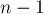) — без этого многие стандартные структуры данных работать не смогут из-за высокого потребления памяти.
до 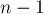) — без этого многие стандартные структуры данных работать не смогут из-за высокого потребления памяти.
С другой стороны, у данного пути есть и преимущества. Во-первых, при таком способе решения не придётся задумываться о хитрой динамике. Во-вторых, этот способ позволяет решать некоторые обобщения нашей задачи (о них см. ниже).
Смежные задачи
Приведём здесь несколько задач, тесно связанных с задачей поиска наидлиннейшей возрастающей подпоследовательности.
Наидлиннейшая неубывающая подпоследовательность
Фактически, это та же самая задача, только теперь в искомой подпоследовательности допускаются одинаковые числа (т.е. мы должны найти нестрого возрастающую подпоследовательность).
Решение этой задачи по сути ничем не отличается от нашей исходной задачи, просто при сравнениях изменятся знаки неравенств, а также надо будет немного изменить двоичный поиск.
Количество наидлиннейших возрастающих подпоследовательностей
Для решения этой задачи можно использовать самую первую динамику за либо подход с помощью структур данных для решения за . И в том, и в том случае все изменения заключаются только в том, что помимо значения динамики надо также хранить, сколькими способами это значение могло быть получено.
По всей видимости, способ решения через динамику за к данной задаче применить невозможно.
Наименьшее число невозрастающих подпоследовательностей, покрывающих данную последовательность
Условие таково. Дан массив из чисел . Требуется раскрасить его числа в наименьшее число цветов так, чтобы по каждому цвету получалась бы невозрастающая подпоследовательность.
Решение. Утверждается, что минимальное количество необходимых цветов равно длине наидлиннейшей возрастающей подпоследовательности.
Доказательство. Фактически, нам надо доказать двойственность этой задачи и задачи поиска наидлиннейшей возрастающей подпоследовательности.
Обозначим через  длину наидлиннейшей возрастающей подпоследовательности, а через 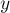 — искомое наименьшее число невозрастающих подпоследовательностей. Нам надо доказать, что .
длину наидлиннейшей возрастающей подпоследовательности, а через 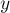 — искомое наименьшее число невозрастающих подпоследовательностей. Нам надо доказать, что .
С одной стороны, понятно, почему не может быть  : ведь если у нас есть строго возрастающих элементов, то никакие два из них не могли попасть в одну невозрастающую подпоследовательность, а, значит,
: ведь если у нас есть строго возрастающих элементов, то никакие два из них не могли попасть в одну невозрастающую подпоследовательность, а, значит,  .
.
Покажем теперь, что, наоборот, не может быть  . Докажем это от противного: предположим, что x">. Тогда рассмотрим любой оптимальный набор из невозрастающих подпоследовательностей. Преобразуем этот набор таким образом: пока есть две таких подпоследовательности, что первая начинается раньше второй, но при этом первая начинается с числа, больше либо равного чем начало второй — отцепим это стартовое число от первой подпоследовательности и прицепим в начало второй. Таким образом, через какое-то конечное число шагов у нас останется подпоследовательностей, причём их стартовые числа будут образовывать возрастающую подпоследовательность длины . Но x">, т.е. мы пришли к противоречию (ведь не может быть возрастающих подпоследовательностей длиннее ).
. Докажем это от противного: предположим, что x">. Тогда рассмотрим любой оптимальный набор из невозрастающих подпоследовательностей. Преобразуем этот набор таким образом: пока есть две таких подпоследовательности, что первая начинается раньше второй, но при этом первая начинается с числа, больше либо равного чем начало второй — отцепим это стартовое число от первой подпоследовательности и прицепим в начало второй. Таким образом, через какое-то конечное число шагов у нас останется подпоследовательностей, причём их стартовые числа будут образовывать возрастающую подпоследовательность длины . Но x">, т.е. мы пришли к противоречию (ведь не может быть возрастающих подпоследовательностей длиннее ).
Таким образом, в самом деле, , что и требовалось доказать.
Восстановление ответа. Утверждается, что само искомое разбиение на подпоследовательности можно искать жадно, т.е. идя слева направо и относя текущее число в ту подпоследовательность, которая сейчас заканчивается на минимальное число, больше либо равное текущему.
Задачи в online judges
Список задач, которые можно решить по данной тематике:
- MCCME #1793 "Наибольшая возрастающая подпоследовательность за O(n*log(n))" [сложность: низкая]
- TopCoder SRM 278 "500 IntegerSequence" [сложность: низкая]
- TopCoder SRM 233 "DIV2 1000 AutoMarket" [сложность: низкая]
- Всеукраинская олимпиада школьников по информатике — задача F "Турист" [сложность: средняя]
- Codeforces Beta Round #10 — задача D "НОВП" [сложность: средняя]
- ACM.TJU.EDU.CN 2707 "Greatest Common Increasing Subsequence" [сложность: средняя]
- SPOJ #57 "SUPPER. Supernumbers in a permutation" [сложность: средняя]
- ACM.SGU.RU #521 "North-East" [сложность: высокая]
- TopCoder Open 2004 — Round 4 — "1000. BridgeArrangement" [сложность: высокая]